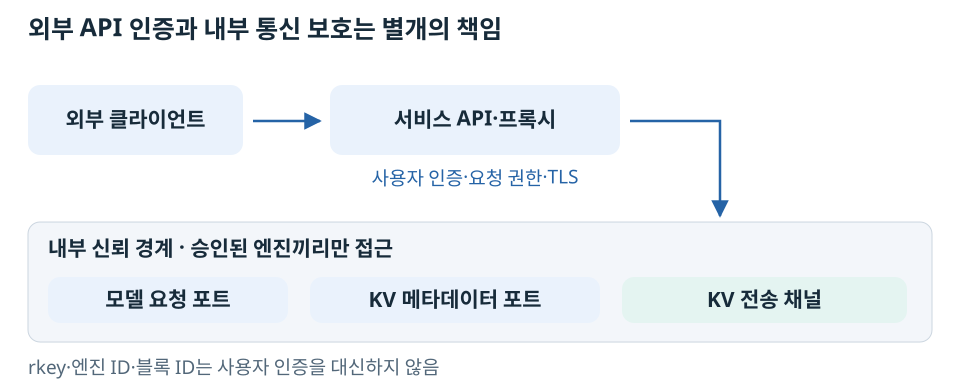

KV Cache는 사용자 입력에서 만들어진 내부 상태다. 다른 엔진이 이 데이터를 읽을 수 있도록 연결했다면, 누가 그 연결과 메타데이터 교환에 참여할 수 있는지도 보호해야 한다.
보호할 것은 HTTP API 하나만이 아니다

외부 API에 HTTPS나 API Key가 있어도 내부 NIXL·분산 통신 포트가 자동으로 보호되는 것은 아니다. vLLM은 서버 간 통신을 신뢰된 네트워크에 두고 접근을 제한하도록 안내한다. vLLM 보안 문서.
‘포트에 접속하면 아무나 가져갈 수 있는가’의 정확한 답
인증 없는 메타데이터 교환 endpoint를 비신뢰 주체에게 열면 위험하다. 원격 접근에 필요한 정보를 그 주체가 얻거나, 내부 프로토콜을 악용할 여지가 생긴다. 엔진 ID·요청 ID·블록 ID는 그 자체로 사용자 인증 수단이 아니다.
그러나 ‘블록 번호 하나만 알면 curl로 GPU 메모리를 읽을 수 있다’는 뜻은 아니다. 해당 프로토콜과 메타데이터 형식, 유효한 엔진·버퍼 상태, 접근 가능한 데이터 경로가 필요하다. RDMA라면 호환되는 RDMA 장치·접근 조건도 필요하다. 기술적으로 접근 조건이 복잡하다는 것과 보안적으로 허용된 상대라는 것은 다르다.
메모리 등록 범위가 여러 요청의 KV를 포함할 수 있으므로, 전송 코드가 특정 블록만 선택한다는 사실을 강제된 요청별 보안 격리로 간주해서도 안 된다. rkey가 허용하는 범위는 메모리 등록에서 설명한다.
TCP로 바꾸면 안전해지는가
TCP는 전송의 순서·신뢰성을 제공하지, 사용자 인증·암호화를 자동 제공하지 않는다. GPU 데이터를 호스트 RAM으로 옮겨 TCP로 전달하는 경로도 내부 endpoint의 보호가 필요하다.
일반 맥은 호환 프로토콜의 TCP 클라이언트가 될 수 있다. 그렇다고 현재 NIXL/vLLM 환경에 맥을 연결해 KV를 추출할 수 있음이 검증된 것은 아니다. 이 문서의 주장은 ‘RDMA 장치가 없는 컴퓨터에는 TCP 내부 포트를 공개해도 안전하다’는 추론이 성립하지 않는다는 것이다.
운영상 분리할 책임
- 서비스 진입점: 사용자 인증·요청 권한·TLS를 제공한다.
- 내부 네트워크: 승인한 엔진 사이에만 제어·데이터 포트 접근을 허용한다.
- 메타데이터: 로그·응답·저장소로 불필요하게 공개하지 않는다.
- 엔진 수명 주기: 재시작한 엔진의 오래된 메모리 정보가 재사용되지 않게 한다.
- 다중 사용자 격리: 논리적 블록 배정만으로 충분한지 별도 설계·검증한다.
RunPod 사설망은 외부 노출 범위를 줄이는 환경 조건이다. 암호화 여부나 내부 참가자별 인가까지 이 실험에서 검증한 것은 아니다. 보안 침투·데이터 추출 실험은 수행하지 않았다.